마케팅과 리걸: 글쓰기와 계약서 검토
영상은 클로드를 유료로 쓰고 있다면 꼭 추가해 둘 플러그인 다섯 개를 소개해요. 화면 위쪽에 Marketing, Legal, Sales, Productivity, Small Business 아이콘 다섯 개가 나란히 떠 있고, 아래에는 클로드가 켜진 노트북과 Claude Pro 결제 카드가 있어요.
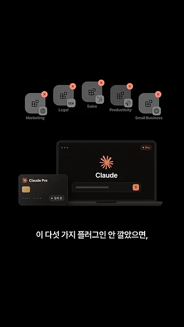
마케팅: 일정표, 캡션, 올리기 전 검수
첫 번째는 마케팅 플러그인이에요. 목표와 기간을 알려 주면 주차별 콘텐츠 일정표부터 짜 줘요. 화면 위쪽 입력란에 '목표 · 강의 오픈 알리기', '기간 · 4주'가 들어가 있어요. 그러자 2026년 11월 달력에 예고 릴스, 미리보기 글 같은 콘텐츠가 주차별로 채워지고, 마지막 주에 '강의 오픈'이 표시돼요.
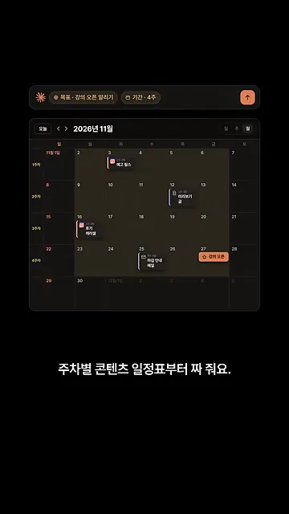
주제와 대상을 말하면 인스타 캡션을 써요. 예시는 주제가 '노션 업무 정리', 대상이 '1인 사업자'예요. 캡션 첫 줄에는 '노션 하나로 하루 정리 끝내는 법'이라는 후킹 문장이 들어가고, 끝에는 해시태그가 붙어 있어요. 화면 양옆의 '첫 줄 후킹', '해시태그' 꼬리표가 그 두 부분을 가리켜요.
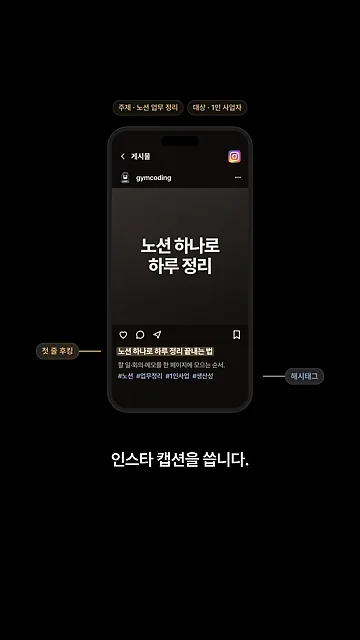
글을 올리기 전에 검수를 맡길 수도 있어요. 화면 아래 검색창에 brand-review가 보여요. 홍보 글 초안의 '국내 최고' 부분에는 '근거 없는 최고' 경고가 붙어요. 수강생 후기 '덕분에 일이 절반으로 줄었어요' 아래에는 '광고 표시 없음' 경고가 붙어요.
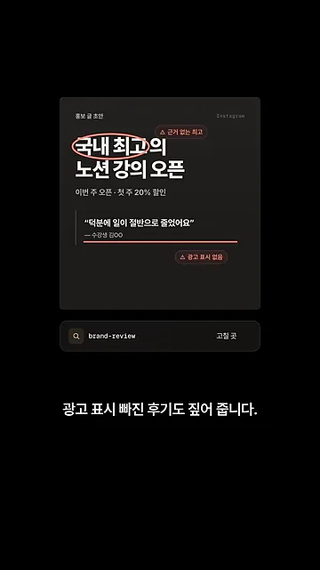
리걸: 조항마다 신호등, 수정 문구, 협상 전략
두 번째는 리걸 플러그인이에요. '협찬 계약서.pdf'를 넣으면 먼저 '어느 쪽 입장이세요?'라고 물어요. 돈 받는 쪽(공급자)인지 돈 내는 쪽(고객)인지에 따라 같은 조항도 유불리가 달라지기 때문이에요. 예시에서는 돈 받는 쪽을 골랐어요. 그러자 조항마다 색 표시가 붙어요. 지급 조건과 계약 기간은 초록(괜찮음), 콘텐츠 권리는 노랑(협상), 독점 조항은 빨강(위험)이에요.
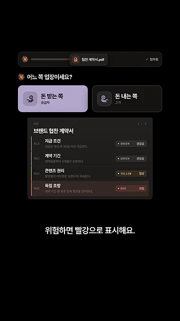
고쳐야 할 조항에는 바로 넣을 수정 문구도 제안해요. 노랑이었던 콘텐츠 권리 조항을 보면, '촬영한 모든 콘텐츠의 저작권은 브랜드에 영구 귀속된다'에 취소선이 그어져 있어요. 그 아래에 '브랜드는 캠페인 종료 후 6개월까지 콘텐츠를 사용할 수 있다'라는 대안 문장이 들어가 있고, 오른쪽 아래에 '바로 넣기' 버튼이 있어요.
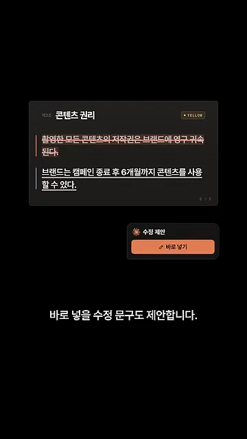
마지막으로 조건을 둘로 나눠 협상 전략을 세워요. 왼쪽 '꼭 지킬 것' 칸에는 '독점 3개월 이내'와 '대금 30일 안 지급'이 있어요. 오른쪽 '양보해도 됨' 칸에는 '게시 시간 지정'과 '해시태그 추가'가 있어요. 그 아래 협상 전략 1번이 '꼭 지킬 것부터 말하기'예요.
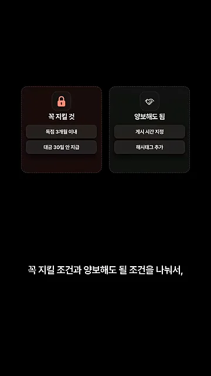
세일즈와 프로덕티비티: 영업 메일과 할 일 관리
세일즈: 상대 회사 조사부터 반론 대응까지
세 번째는 세일즈 플러그인이에요. 연락하고 싶은 회사의 최근 소식을 조사해서 제안 메일 초안으로 만들어요. 예시 회사는 '모노커피'예요. 위쪽에 시즌 원두 출시(보도자료), 성수 팝업 오픈(인스타그램), 마케터 채용(채용 공고) 세 소식이 모여 있어요. 아래 새 메일은 그중 성수 팝업 소식을 골라 '성수 팝업 영상, 저희가 찍어 드릴까요?'라는 제목으로 쓰여 있어요.
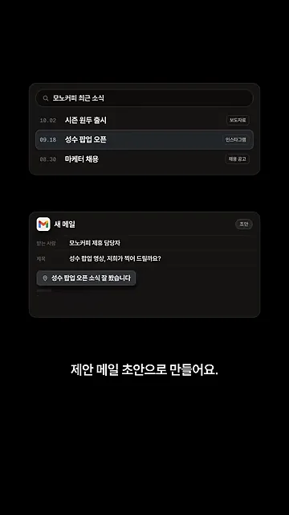
상대가 비싸다고 할 때 쓸 답변도 알려 줘요. 담당자가 '견적이 예산보다 좀 비싸네요'라고 하면 화면이 두 칸으로 나뉘어요. '이렇게 답하기' 칸은 '예산에 맞춰 영상 1편 + 숏폼 3개로 바꿔 드릴게요'예요. '이 말은 금지' 칸에는 '바로 30% 깎아 드릴게요'와 '다른 곳은 더 비싸요'가 취소선과 함께 있어요.
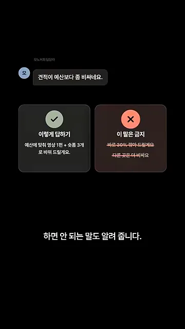
프로덕티비티: 할 일, 기다리는 일, 메일 속 약속
네 번째는 프로덕티비티 플러그인이에요. '금요일까지 지민님한테 B사 썸네일 시안 보내기'처럼 할 일을 말하면 Active, Waiting On, Someday 세 칸 목록으로 정리해요. 아래 카드 두 장이 기억 기능이에요. '박지민 = 영상 편집자', 'B사 = 브라이트랩 협찬 브랜드'처럼 협업자 이름과 줄임말을 따로 기억해 둬요.
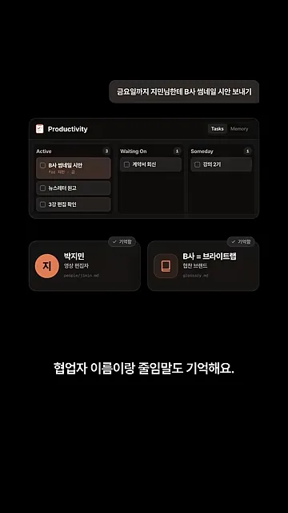
회신을 기다리는 일은 따로 모아서 며칠째인지 보여 줘요. 브라이트랩 계약서 회신은 7일째, 지민 편집본 피드백은 3일째, 세무사 자료 확인은 1일째예요. 막대가 길수록 오래 기다린 일이라, 누구에게 먼저 다시 연락할지 한눈에 보여요.
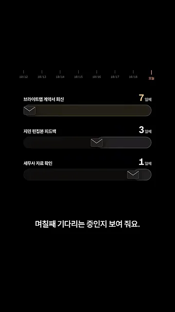
메일을 연결하면 내가 보낸 메일도 읽어요. 화면 위쪽에 Gmail과 클로드가 Connected로 이어져 있어요. 아래에는 박지민 님께 보낸 메일 속 '금요일까지 수정본 보내드릴게요.'라는 문장이 강조돼 있어요. 이렇게 찾은 마감 약속을 할 일에 넣을지 물어봐요.
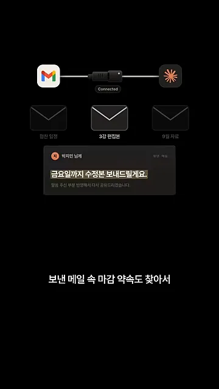
스몰 비즈니스, 그리고 먼저 해 둘 설정
스몰 비즈니스: 메일함 정리와 승인 모드
다섯 번째는 스몰 비즈니스 플러그인이에요. 처음 설정할 때 하는 일과 쓰는 도구를 알려 두면 기능마다 그 정보를 반영해요. 메일함에서는 꼭 봐야 할 메일만 골라 줘요. 화면의 깔때기 아래 숫자가 그 결과예요. 직접 볼 메일 4통, 답장 초안 11통, 정리 끝 48통이에요. 답장은 내 말투로 초안을 써 둬요.
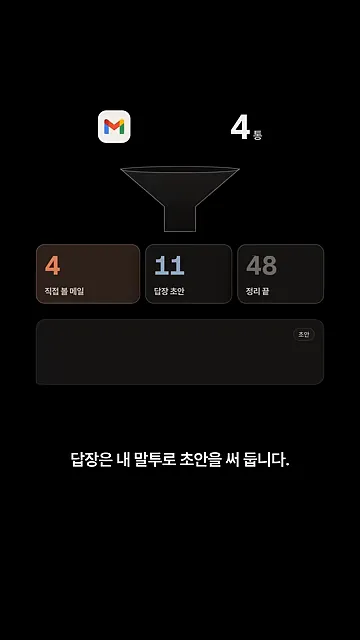
그렇다고 알아서 다 처리하지는 않아요. 화면 위에 '승인 모드'가 켜져 있어요. 보내기(Gmail), 게시(Instagram), 결제 카드 세 장에 모두 자물쇠와 '승인 대기'가 붙어 있어요. 가운데 아래 승인 버튼을 내가 눌러야 진행돼요.
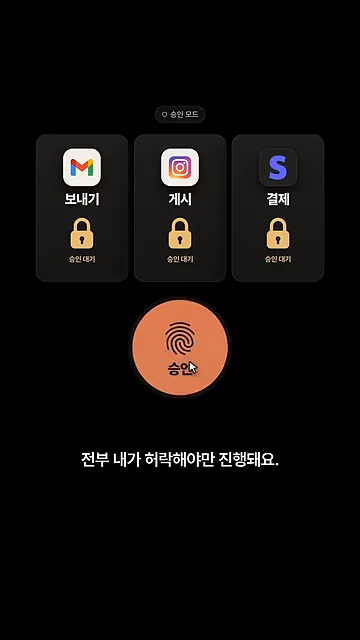
설정 없이 쓰면 생기는 일
영상이 마지막에 짚는 건 설정이에요. 다섯 개 모두 설정 없이 쓰면 내 기준을 모르는 채로 일해요. 화면에는 플러그인마다 채워야 할 칸이 하나씩 달려 있어요. 지금은 전부 기본값이에요.
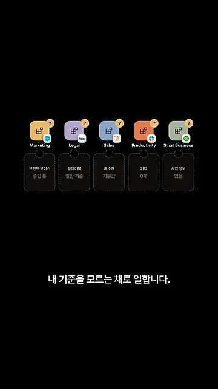
화면 속 칸을 표로 옮기면 이래요. 플러그인을 추가한 뒤 이 칸부터 채우면 돼요.
| 플러그인 | 먼저 채울 칸 | 설정 전 상태 | 영상에서 맡긴 일 |
|---|---|---|---|
| Marketing | 브랜드 보이스 | 중립 톤 | 주차별 일정표, 인스타 캡션, 올리기 전 검수 |
| Legal | 플레이북 | 일반 기준 | 조항별 색 표시, 수정 문구, 협상 전략 |
| Sales | 내 소개 | 기본값 | 회사 조사, 제안 메일, 가격 반론 대응 |
| Productivity | 기억 | 0개 | 할 일 목록, 회신 대기, 메일 속 약속 |
| Small Business | 사업 정보 | 없음 | 메일함 정리, 답장 초안, 승인 모드 |
특히 리걸은 기본이 미국 계약 기준이에요. 협찬 계약서 오른쪽 위에 '미국 계약 기준' 표시가 붙어 있어요. 지급 조건, 계약 기간, 준거법이 모두 초록이지만, 그건 미국 기준으로 괜찮다는 뜻이에요. 아래에는 legal.local.md 기본 예시가 Delaware, New York, California라고 적혀 있어요. 그래서 초록으로 떠도 그대로 믿고 사인하면 안 돼요.
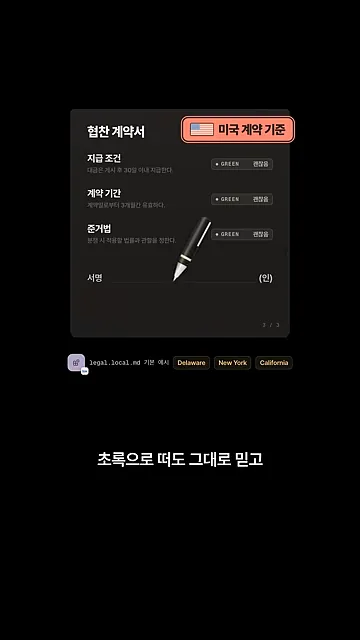